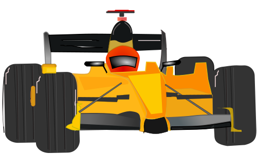
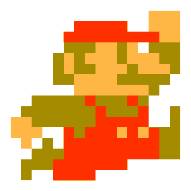
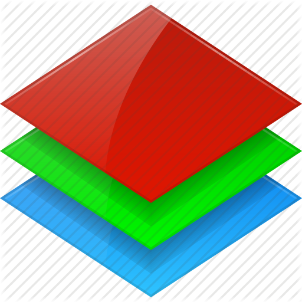

Questions?

- How do you do localization in HTML5?
- Can you restrict HTML5 games geographically?
- Are you going to cover multiplayer games?
- How do you save your game?
- ... with loss of connection?
- How do you feel about the move from Mozilla
to support W3C EME?
Ask us more! ntu.questions@gmail.com
HOT TIP!
Hacker News
- News that programmers find interesting
- Links & discussion borad
- Vote based, like Reddit
- Range of topics
- - startup news
- - programming languages
- - science
- - politics
- Check it out!
Performance
- What makes a good game Good?
- Beautiful Artwork
- Great Music
- Compelling Story
- GRAPHICS!!!
Graphics
- Resolution & Framerate
- Movies are 24 fps
- Games should aim for 60 fps
- Higher framerate = smoother, more fun
- Which would you rather play?
Moral of the Story
- Don't do a lot of work in the tick
- 60fps -> 16ms per tick
- tick fast!
- Profiler can help
The Challenge
- OpenGL, DirectX
- talk directly to GPU
- but STEEP learning curve
- HTML5
- easy learning curve
- but only indirect access to GPU
- great for web development
- really hard to optimize deeply
Canvas, why u no fast?
- Canvas Draws do this:
- javascript -> c++ -> OpenGL -> javascript
- very hard to optimize this
- OpenGL, many ways to optimize
- batch up draw calls before flushing buffer
- not tied to specific implementation
- ...but, there are still things we can do
Layers & Dirty Rectangles
- Don't draw entire seen every tick
- Use multiple canvases
- Only clear certain areas of screen
- known as "dirty rectangles"
Layers
#background {
z-index: 1;
}
#characters {
z-index: 2
}
#foreground {
z-index: 3
}
Layers
Pipe.prototype.draw = function(pipeCtx) {
this.ctx.clearRect(this.lastX, this.y, this.width, this.height);
this.ctx.drawImage(this.image, this.x, this.y, this.width, this.height);
}
Scaling === BAD
Warning: NEATO canvas feature
- Canvas has nice auto-scaling feature
- ctx.drawImage: sw, sh, dw, dh
- DON'T USE IT
- scaling is slow
- especially every tick
- Draw images at their native res
Rounding === GOOD
Warning: NEATO canvas feature
- drawImage with floats causes blending
- browser interpolates between pixels
- DON'T USE IT
- complex maths going on
- especially every tick
- Truncate pixels values before draw
Why learn canvas?
- Performance problems, weird gotchas
- better is WebGL, CSS transforms
- WebGL is really hard to learn, implement
- no quick learning
- no quick prototypes
- CSS tranforms has it's own weird gotchas
- Canvas is easy
- quick prototypes
- make POC fast, optimize later